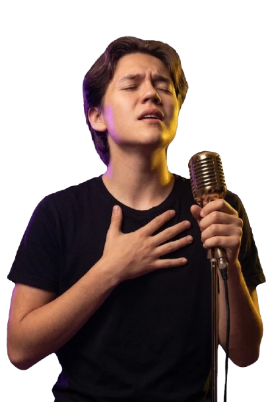

♪♫♩♬

Tu voz,
tu momento,
tu escenario
Soy Tu Fan es el concurso de canto donde tu talento se enfrenta al público. Del casting a la gran gala, este es tu momento de brillar.
Cómo participar
- 01 · RegístrateCompleta tu inscripción y elige tu ciudad.
- 02 · Agenda tu castingEscoge un horario y recibe tu confirmación.
- 03 · Demuestra tu talentoMuestra tu voz, personalidad e interpretación.
- 04 · Vive la competenciaSi eres seleccionado, avanzas a las siguientes etapas.
- 05 · Llega a la gran galaCompite por ser protagonista de Soy Tu Fan.
Cada etapa te acerca a tu gran momento
- CastingTu primer encuentro con nuestro equipo.
- Fases de competenciaRetos musicales para mostrar tu evolución y presencia escénica.
- Batalla de vocesTalento, preparación y conexión musical frente a frente.
- Gala finalUna jornada de música, emoción y reconocimiento.
No se trata solo de tener buena voz
- Calidad vocalAfinación, respiración, técnica y control.
- InterpretaciónTransmitir emociones y dar identidad a cada canción.
- Presencia escénicaSeguridad, actitud y dominio del escenario.
- Expresión artísticaConexión con la música y con el público.
- Evolución y desempeñoTu crecimiento durante la competencia.
Tu talento merece ser reconocido
En Soy Tu Fan celebramos el esfuerzo y la dedicación de cada participante.
- Tres lugares premiadosPremiamos al primer, segundo y tercer lugar de cada edición.
- Los más destacados compitenLos talentos que más sobresalen tienen la oportunidad de competir por premios y reconocimientos especiales.
¡No te quedes con las ganas de cantar!
Las oportunidades comienzan cuando decides atreverte. Elige tu canción y demuestra todo lo que tienes. ¡Tu voz puede ser la próxima en hacerse escuchar!
Ver preguntas frecuentes ↓